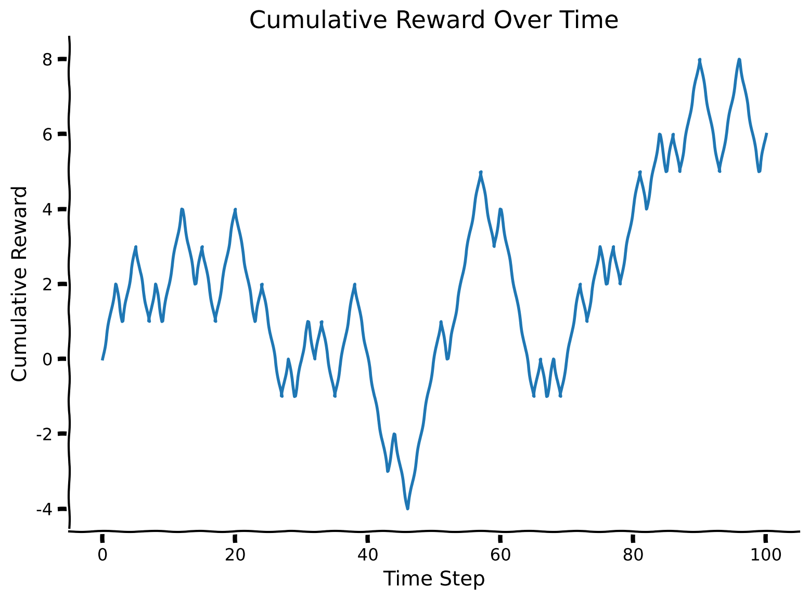
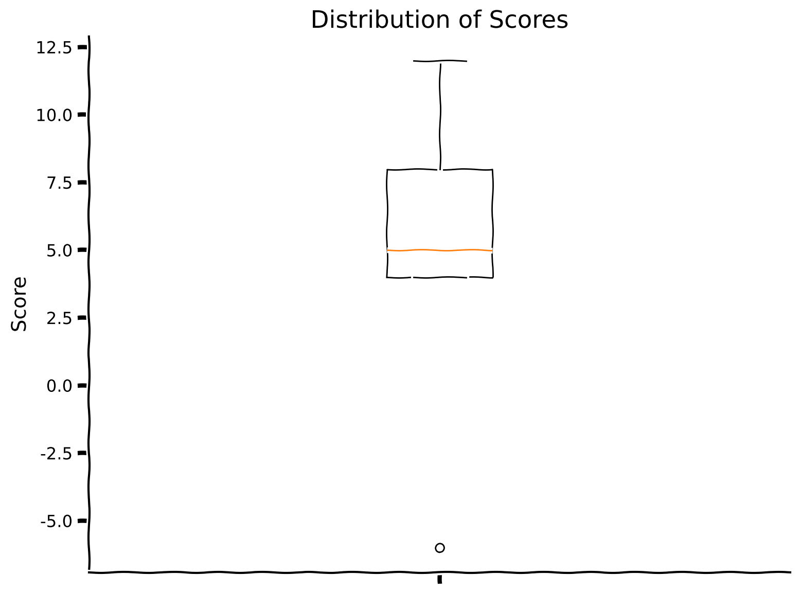
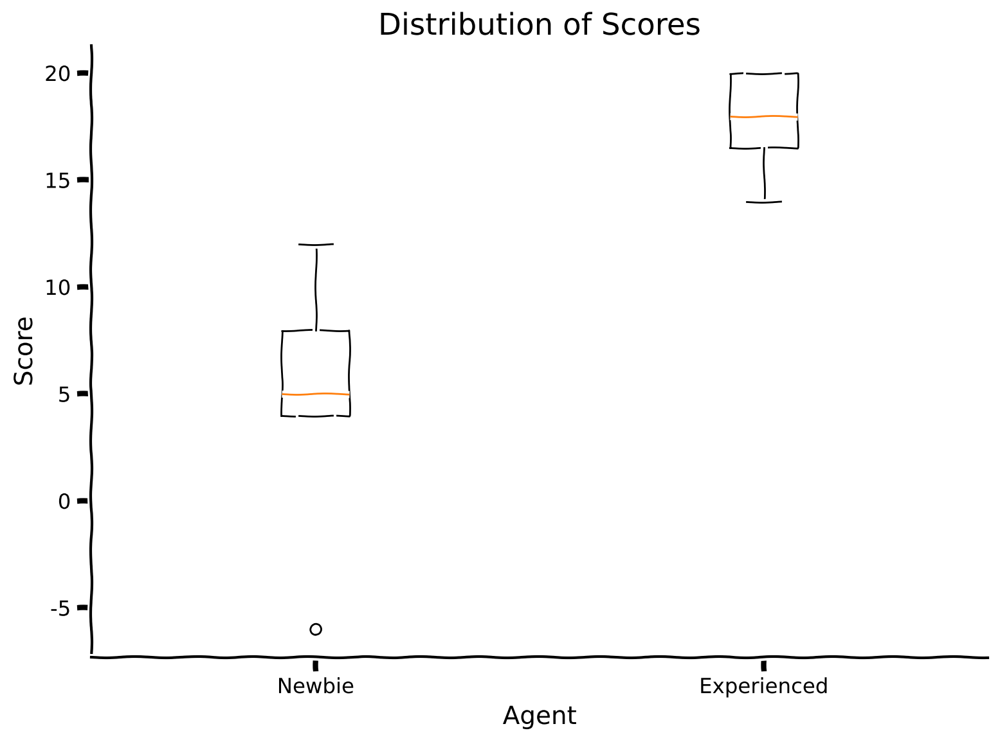

Tutorial 4: Biological meta reinforcement learning#
Week 2, Day 4: Macro-Learning
By Neuromatch Academy
Content creators: Hlib Solodzhuk, Ximeng Mao, Grace Lindsay
Content reviewers: Aakash Agrawal, Alish Dipani, Hossein Rezaei, Yousef Ghanbari, Mostafa Abdollahi, Hlib Solodzhuk, Ximeng Mao, Samuele Bolotta, Grace Lindsay, Alex Murphy
Production editors: Konstantine Tsafatinos, Ella Batty, Spiros Chavlis, Samuele Bolotta, Hlib Solodzhuk, Alex Murphy
Tutorial Objectives#
Estimated timing of tutorial: 70 minutes
In this tutorial, you will observe how meta-learning may occur in the brain, specifically through reinforcement learning and the Baldwin effect.
If you want to download the slides: https://osf.io/download/t36w8/
<__main__._NoOpWidget at 0x7fe390cffb80>
Setup#
Install and import feedback gadget#
Show code cell source
# @title Install and import feedback gadget
!pip install numpy matplotlib ipywidgets jupyter_ui_poll torch tqdm vibecheck datatops --quiet
from vibecheck import DatatopsContentReviewContainer
def content_review(notebook_section: str):
return DatatopsContentReviewContainer(
"", # No text prompt
notebook_section,
{
"url": "https://pmyvdlilci.execute-api.us-east-1.amazonaws.com/klab",
"name": "neuromatch_neuroai",
"user_key": "wb2cxze8",
},
).render()
feedback_prefix = "W2D4_T4"
Imports#
Show code cell source
# @title Imports
#working with data
import numpy as np
import random
#plotting
import matplotlib.pyplot as plt
import logging
#interactive display
import ipywidgets as widgets
from IPython.display import display, clear_output
from jupyter_ui_poll import ui_events
import time
from tqdm import tqdm
#modeling
import copy
import torch
import torch.nn as nn
import torch.nn.functional as F
import torch.optim as optim
from torch.autograd import Variable
Figure settings#
Show code cell source
# @title Figure settings
logging.getLogger('matplotlib.font_manager').disabled = True
%matplotlib inline
%config InlineBackend.figure_format = 'retina' # perform high definition rendering for images and plots
plt.style.use("https://raw.githubusercontent.com/NeuromatchAcademy/course-content/main/nma.mplstyle")
Plotting functions#
Show code cell source
# @title Plotting functions
def plot_cumulative_rewards(rewards):
"""
Plot the cumulative rewards over time.
Inputs:
- rewards (list): list containing the cumulative rewards at each time step.
"""
with plt.xkcd():
plt.plot(range(len(rewards)), rewards)
plt.xlabel('Time Step')
plt.ylabel('Cumulative Reward')
plt.title('Cumulative Reward Over Time')
plt.show()
def plot_boxplot_scores(scores):
"""
Plots a boxplot of the given scores.
Inputs:
scores (list): list of scores.
"""
with plt.xkcd():
plt.boxplot(scores, labels = [''])
plt.xlabel('')
plt.ylabel('Score')
plt.title('Distribution of Scores')
plt.show()
def plot_two_boxplot_scores(newbie_scores, experienced_scores):
"""
Plots two boxplots of the given scores.
Inputs:
scores (list): list of scores.
"""
with plt.xkcd():
plt.boxplot([newbie_scores, experienced_scores], labels=['Newbie', 'Experienced'])
plt.xlabel('Agent')
plt.ylabel('Score')
plt.title('Distribution of Scores')
plt.show()
Set device (GPU or CPU)#
Show code cell source
# @title Set device (GPU or CPU)
def set_device():
"""
Determines and sets the computational device for PyTorch operations based on the availability of a CUDA-capable GPU.
Outputs:
- device (str): The device that PyTorch will use for computations ('cuda' or 'cpu'). This string can be directly used
in PyTorch operations to specify the device.
"""
device = "cuda" if torch.cuda.is_available() else "cpu"
if device != "cuda":
print("GPU is not enabled in this notebook. \n"
"If you want to enable it, in the menu under `Runtime` -> \n"
"`Hardware accelerator.` and select `GPU` from the dropdown menu")
else:
print("GPU is enabled in this notebook. \n"
"If you want to disable it, in the menu under `Runtime` -> \n"
"`Hardware accelerator.` and select `None` from the dropdown menu")
return device
device = set_device()
GPU is not enabled in this notebook.
If you want to enable it, in the menu under `Runtime` ->
`Hardware accelerator.` and select `GPU` from the dropdown menu
Helper functions#
Show code cell source
# @title Helper functions
def generate_symbols():
"""
Generate random symbols for playing Harlow experiment.
Outputs:
- symbols (list): list of symbols.
"""
symbols = []
symbol_types = ['circle', 'square', 'triangle', 'star', 'pentagon', 'hexagon', 'octagon', 'diamond', 'arrow', 'rectangle']
symbol_types = np.random.permutation(symbol_types)
for symbol_type in symbol_types:
color = np.random.choice(['red', 'blue', 'green', 'yellow'])
if symbol_type == 'circle':
symbol = plt.Circle((0.5, 0.5), 0.3, color=color)
elif symbol_type == 'square':
symbol = plt.Rectangle((0.2, 0.2), 0.6, 0.6, color=color)
elif symbol_type == 'triangle':
symbol = plt.Polygon([(0.2, 0.2), (0.5, 0.8), (0.8, 0.2)], closed=True, color=color)
elif symbol_type == 'star':
symbol = plt.Polygon([(0.5, 1), (0.6, 0.7), (0.8, 0.7), (0.65, 0.5), (0.75, 0.3),
(0.5, 0.45), (0.25, 0.3), (0.35, 0.5), (0.2, 0.7), (0.4, 0.7)], closed=True, color=color)
elif symbol_type == 'pentagon':
symbol = plt.Polygon([(0.5 + 0.2*np.cos(2*np.pi*i/5), 0.5 + 0.2*np.sin(2*np.pi*i/5)) for i in range(5)], closed=True, color=color)
elif symbol_type == 'hexagon':
symbol = plt.Polygon([(0.5 + 0.2*np.cos(2*np.pi*i/6), 0.5 + 0.2*np.sin(2*np.pi*i/6)) for i in range(6)], closed=True, color=color)
elif symbol_type == 'octagon':
symbol = plt.Polygon([(0.5 + 0.2*np.cos(2*np.pi*i/8), 0.5 + 0.2*np.sin(2*np.pi*i/8)) for i in range(8)], closed=True, color=color)
elif symbol_type == 'diamond':
symbol = plt.Polygon([(0.5, 0.7), (0.3, 0.5), (0.5, 0.3), (0.7, 0.5)], closed=True, color=color)
elif symbol_type == 'arrow':
symbol = plt.Polygon([(0.3, 0.3), (0.5, 0.7), (0.7, 0.3), (0.5, 0.5)], closed=True, color=color)
elif symbol_type == 'rectangle':
symbol = plt.Rectangle((0.4, 0.2), 0.2, 0.6, color=color)
symbols.append(symbol)
return symbols
def run_dummy_agent(env):
"""
Implement dummy agent strategy: chooses the last rewarded action.
Inputs:
- env (HarlowExperimentEnv): An environment.
"""
action = 0
cumulative_reward = 0
rewards = [cumulative_reward]
for _ in (range(num_trials)):
_, reward = env.step(action)
cumulative_reward += reward
rewards.append(cumulative_reward)
#dummy agent
if reward == -1:
action = 1 - action
return rewards
def game():
"""
Create interactive game which resembles one famous experiment!
"""
total_reward = 0
symbols = generate_symbols()
message = "Start of the game!"
total_attempts = 5 * 6 # Assuming 5 sets with 6 attempts each
left_button = widgets.Button(description="Left")
right_button = widgets.Button(description="Right")
button_box = widgets.HBox([left_button, right_button])
def define_choice(button):
"""
Change `choice` variable with respect to the pressed button.
"""
nonlocal choice
display(widgets.HTML(f"<h3>{button.description}</h3>"))
print(button.description)
if button.description == "Left":
choice = 0
else:
choice = 1
left_button.on_click(define_choice)
right_button.on_click(define_choice)
attempt_count = 0 # Initialize attempt counter
for index in range(5):
first_symbol, second_symbol = symbols[2*index : 2*index + 2]
for attempt in range(6):
attempt_count += 1 # Increment the attempt counter
start_time = time.time()
clear_output(wait=True)
location_of_first_symbol = np.random.choice([0, 1])
display(widgets.HTML(f"<h3>{message}</h3>"))
display(widgets.HTML(f"<h3>Total reward: {total_reward}</h3>"))
display(widgets.HTML(f"<h4>Objects:</h4>"))
# Display attempt number out of total attempts
display(widgets.HTML(f"<h4>Attempt {attempt_count} out of {total_attempts}</h4>"))
if location_of_first_symbol == 0:
symbol_left = copy.copy(first_symbol)
symbol_right = copy.copy(second_symbol)
else:
symbol_left = copy.copy(second_symbol)
symbol_right = copy.copy(first_symbol)
with plt.xkcd():
fig, axs = plt.subplots(1, 2, figsize=(8, 4))
axs[0].add_patch(symbol_left)
axs[0].set_xlim(0, 1)
axs[0].set_ylim(0, 1)
axs[0].axis('off')
axs[1].add_patch(symbol_right)
axs[1].set_xlim(0, 1)
axs[1].set_ylim(0, 1)
axs[1].axis('off')
plt.show()
display(widgets.HTML("<h4>Choose Left or Right:</h4>"))
display(button_box)
choice = -1
with ui_events() as poll:
while choice == -1:
poll(10)
time.sleep(0.1)
if time.time() - start_time > 60:
return
if choice == location_of_first_symbol:
total_reward += 1
message = "You received a reward of +1."
else:
total_reward -= 1
message = "You received a penalty of -1."
clear_output(wait=True)
display(widgets.HTML(f"<h3>Your total reward: {total_reward}, congratulations! Do you have any idea what you should do to maximize the reward?</h3>"))
Data retrieval#
Show code cell source
# @title Data retrieval
import os
import requests
import hashlib
# Variables for file and download URL
fname = "Evolution.pt" # The name of the file to be downloaded
url = "https://osf.io/wmvh4/download" # URL from where the file will be downloaded
expected_md5 = "d0a74898e56549f7c5206e4c8f373ced" # MD5 hash for verifying file integrity
if not os.path.isfile(fname):
try:
# Attempt to download the file
r = requests.get(url) # Make a GET request to the specified URL
except requests.ConnectionError:
# Handle connection errors during the download
print("!!! Failed to download data !!!")
else:
# No connection errors, proceed to check the response
if r.status_code != requests.codes.ok:
# Check if the HTTP response status code indicates a successful download
print("!!! Failed to download data !!!")
elif hashlib.md5(r.content).hexdigest() != expected_md5:
# Verify the integrity of the downloaded file using MD5 checksum
print("!!! Data download appears corrupted !!!")
else:
# If download is successful and data is not corrupted, save the file
with open(fname, "wb") as fid:
fid.write(r.content) # Write the downloaded content to a file
Set random seed#
Show code cell source
# @title Set random seed
import random
import numpy as np
import torch
def set_seed(seed=None, seed_torch=True):
if seed is None:
seed = np.random.choice(2 ** 32)
random.seed(seed)
np.random.seed(seed)
if seed_torch:
torch.manual_seed(seed)
torch.cuda.manual_seed_all(seed)
torch.cuda.manual_seed(seed)
torch.backends.cudnn.benchmark = False
torch.backends.cudnn.deterministic = True
set_seed(seed = 42)
Section 0: Let’s play a game!#
First, watch the video to understand our shift to reinforcement learning. Then, try out your own reinforcement learning skills! Below, you will play an interactive game, and your task is to maximize the total reward you receive!
Video 1: Reinforcement Learning Task#
Video available at https://youtube.com/watch?v=gMokzgVkf5o
Video available at https://www.bilibili.com/video/BV1hf421D7y9
<__main__._NoOpWidget at 0x7fe2c08ae770>
Submit your feedback#
Show code cell source
# @title Submit your feedback
content_review(f"{feedback_prefix}_rl_task")
<__main__._NoOpWidget at 0x7fe2c08af310>
The rules are simple: on each turn, you are shown two distinct objects in two different hands (left or right). You should pick a hand; after that, you will immediately observe the reward for this particular choice. Good luck with maximizing your score! After playing, discuss in a group whether you have any clues about the underlying structure of the game and whether the most optimal strategy exists to play this game.
Make sure you execute this cell to play the game!#
Show code cell source
# @title Make sure you execute this cell to play the game!
game()
<__main__._NoOpWidget at 0x7fe390b46d70>
<__main__._NoOpWidget at 0x7fe390b46d70>
<__main__._NoOpWidget at 0x7fe390b46d70>
<__main__._NoOpWidget at 0x7fe390b46d70>
<__main__._NoOpWidget at 0x7fe390b46d70>
<__main__._NoOpWidget at 0x7fe2c08aeef0>
Submit your feedback#
Show code cell source
# @title Submit your feedback
content_review(f"{feedback_prefix}_rl_game")
<__main__._NoOpWidget at 0x7fe2c08afb80>
Section 1: Harlow Experiment & Advantage Actor Critic (A2C) Agent#
Estimated timing to here from start of tutorial: 10 minutes
In this section, we will introduce the reinforcement learning environment, replicating the 1940s Harlow experiment, and observe how different agents can learn to perform a single task.
Video 2: Reinforcement Learning on the Harlow Task#
Video available at https://youtube.com/watch?v=QLu6MD_SUno
Video available at https://www.bilibili.com/video/BV1o7421R7Gu
<__main__._NoOpWidget at 0x7fe2bd7584c0>
Submit your feedback#
Show code cell source
# @title Submit your feedback
content_review(f"{feedback_prefix}_harlow_experiment")
<__main__._NoOpWidget at 0x7fe2bd7591e0>
Any RL system consists of an agent who tries to succeed in a task by observing the state of the environment, executing an action, and receiving the outcome (reward) based on its action. The environment is the source of the reward signal in the RL framework.
First, we will define the environment for this task.
class HarlowExperimentEnv():
def __init__(self, reward = 1, punishment = -1):
"""Initialize Harlow Experiment environment."""
self.reward = reward
self.punishment = punishment
self.rewarded_digit = -1
self.punished_digit = -1
self.state = np.array([self.rewarded_digit, self.punished_digit])
def update_state(self):
"""Update state by selecting rewarded hand for random."""
if np.random.rand() < 0.5:
self.state = np.array([self.rewarded_digit, self.punished_digit])
else:
self.state = np.array([self.punished_digit, self.rewarded_digit])
def reset(self):
"""Reset environment by updating new rewarded and punished digits as well as create current state of the world (tuple of observations)."""
self.rewarded_digit, self.punished_digit = np.random.choice(10, 2, replace=False)
self.update_state()
return self.state
def step(self, action):
"""Evaluate agent's performance, return reward and next observation."""
if self.state[action] == self.rewarded_digit:
feedback = self.reward
else:
feedback = self.punishment
self.update_state()
return self.state, feedback
Let’s evaluate a simple strategy for this task: an agent always chooses the side that was previously rewarded (meaning it stays with the same hand if it received a reward and changes its action if it was punished). Do you think this agent uses information about the current state? How much cumulative reward do you expect this “dummy” agent to get?
Make sure you execute this cell to observe the plot!#
Show code cell source
# @title Make sure you execute this cell to observe the plot!
set_seed(42)
num_trials = 100
env = HarlowExperimentEnv()
env.reset()
rewards = run_dummy_agent(env)
plot_cumulative_rewards(rewards)

For now, simply run all the cells in this section without exploring the content. You can come back to look through the code if you have time after completing all the tutorials.
(Click to expand)
The dummy agent’s strategy doesn’t use object identity, which is key to consistently selecting the right action. Let’s see if we can do better than the dummy agent’s strategy. After defining the environment, observing the agent’s behavior, and implementing such a simple policy, it is the right time to remind ourselves about more sophisticated agent architectures capable of learning the environment’s dynamics. For this, we will use the Advantage Actor-Critic (A2C) algorithm.
The main idea behind A2C, as its name suggests, is that it consists of two networks, named actor and critic. The actor network learns the policy (mapping states to actions), while the critic network learns the value function (estimating the expected future rewards from a given state). In most cases, they share the same “body” (i.e., model layers), and only the last linear projection to the output is specific to each network. The “advantage” term comes from the training step: instead of raw rewards, in A2C, we calculate the advantage function, which estimates how much better or worse an action is compared to the average action value for a given state.
The architecture of the agent is as follows: it receives the previous state, previous reward, and previously chosen action as input, which is linearly projected to the hidden_size (this creates an embedding); then, its core consists of recurrent LSTM cells, their number is exactly hidden_size. Right after this RNN layer, there are two distinct linear projections: one for the actor (output dimension coincides with the number of actions; for the Harlow experiment, it is 2) and the other for the critic (outputs one value).
We don’t propose an exercise to code for the agent; when you have time, simply go through the cell below to understand the implementation.
class ActorCritic(nn.Module):
def __init__(self, hidden_size, num_inputs = 5, num_actions = 2):
"""Initialize Actor-Critic agent."""
super(ActorCritic, self).__init__()
#num_actions is 2 because left/right hand
self.num_actions = num_actions
#num_inputs is 5 because one-hot encoding of action (2) + reward (1) + previous state (2)
self.num_inputs = num_inputs
self.hidden_size = hidden_size
#hyperparameters involved in training (important to keep assigned to the agent)
self.learning_rate = 0.00075 #learning rate for optimizer
self.discount_factor = 0.91 #gamma
self.state_value_estimate_cost = 0.4 #beta_v
self.entropy_cost = 0.001 #beta_e
self.emb = nn.Linear(num_inputs, hidden_size)
self.rnn = nn.LSTM(hidden_size, hidden_size)
self.critic_linear = nn.Linear(hidden_size, 1)
self.actor_linear = nn.Linear(hidden_size, num_actions)
def forward(self, state, h, c):
"""Implement forward pass through agent."""
#at first, input goes through embedding
state = self.emb(state.unsqueeze(0))
#then through RNNs (observe that we pass hidden states too!)
state, hidden_states = self.rnn(state.unsqueeze(0), (h, c))
state = state.squeeze(0)
h, c = hidden_states
state = state.squeeze(0)
#critic -> value
value = self.critic_linear(state)
#actor -> policy
policy_logits = self.actor_linear(state)
return value, policy_logits, (h, c)
def get_init_hidden_states(self, batch_size=1, device = device):
"""Initialize hidden state with 0."""
#initialize hidden state in RNNs
return (torch.zeros(1, batch_size, self.hidden_size).to(device), torch.zeros(1, batch_size, self.hidden_size).to(device))
In the cell below, we define the training procedure for the A2C agent and its evaluation afterward. The function train_evaluate_agent performs num_gradient_steps gradient steps (by default 25), and for each of the steps, the agent is exposed to the environment’s states sequence of length num_trials (by default 6, as in the classical Harlow experiment). Each gradient step, it performs backpropagation of the loss for these 6 trials by calculating advantage and weighting actor and critic losses with the entropy of the policy (for more information, please refer to this resource, p.14). After the training, the evaluation phase starts, gathering rewards for num_evaluation_trials trials (by default 20).
Note: the evaluation is completed on the same task (i.e., the same set of two objects) as the model was trained on.
def train_evaluate_agent(env, agent, optimizer_func, num_gradient_steps=25, num_trials=6, num_evaluation_trials=20):
"""Training and evaluation for agent in Harlow experiment environment.
Evaluation goes only after all gradient steps.
Inputs:
- env (HarlowExperimentEnv): environment.
- agent (ActorCritic): particular instance of Actor Critic agent to train.
- optimizer_func (torch.optim.Optimizer): optimizer to use for training.
- num_gradient_steps (int, default=25): number of gradient steps to perform.
- num_trials (int, default=6): number of times the agent is exposed to the environment per gradient step to be trained.
- num_evaluation_trials (int, default=20): number of times the agent is exposed to the environment to evaluate it (no training happens during this phase).
Outputs:
- score (int): cumulative reward over all trials of evaluation.
"""
device = torch.device("cuda" if torch.cuda.is_available() else "cpu")
agent.to(device)
# Training
# Reset environment
state = env.reset()
# Define optimizer
optimizer = optimizer_func(agent.parameters(), lr=agent.learning_rate, eps=1e-5)
for _ in range(num_gradient_steps):
# For storing variables for training
log_probs = []
values = []
rewards = []
entropy_term = torch.tensor(0., device=device)
# Start conditions
h, c = agent.get_init_hidden_states()
preceding_reward = torch.tensor([0], device=device)
preceding_action = torch.tensor([0, 0], device=device)
for trial in range(num_trials):
# State + reward + one-hot encoding of action
full_state = torch.cat((torch.from_numpy(state).float().to(device), preceding_reward, preceding_action), dim=0)
value, policy_logits, step_hidden_states = agent(full_state, h, c)
h, c = step_hidden_states
value = value.squeeze(0)
# Sample action from policy
dist = torch.distributions.Categorical(logits=policy_logits.squeeze(0))
action = dist.sample()
# Perform action to get reward and new state
new_state, reward = env.step(action)
# Update preceding variables
preceding_reward = torch.tensor([reward], device=device)
preceding_action = F.one_hot(action, num_classes=2).float().to(device)
state = new_state
# For training
log_prob = dist.log_prob(action)
entropy = dist.entropy()
rewards.append(reward)
values.append(value)
log_probs.append(log_prob)
entropy_term += entropy
# Calculating loss
Qval = 0
Qvals = torch.zeros(len(rewards), device=device)
for t in reversed(range(len(rewards))):
Qval = rewards[t] + agent.discount_factor * Qval
Qvals[t] = Qval
values = torch.stack(values)
log_probs = torch.stack(log_probs)
advantage = Qvals - values
actor_loss = (-log_probs * advantage.detach()).mean()
critic_loss = advantage.pow(2).mean()
entropy_term = entropy_term / num_trials
# Loss incorporates actor/critic terms + entropy
loss = actor_loss + agent.state_value_estimate_cost * critic_loss - agent.entropy_cost * entropy_term
optimizer.zero_grad()
loss.backward()
optimizer.step()
# Evaluation (on the same task after all gradient steps!)
score = 0
# Start conditions
h, c = agent.get_init_hidden_states()
preceding_reward = torch.tensor([0], device=device)
preceding_action = torch.tensor([0, 0], device=device)
for _ in range(num_evaluation_trials):
# State + reward + one-hot encoding of action
full_state = torch.cat((torch.from_numpy(state).float().to(device), preceding_reward, preceding_action), dim=0)
value, policy_logits, step_hidden_states = agent(full_state, h, c)
h, c = step_hidden_states
value = value.squeeze(0)
# Sample action from policy
dist = torch.distributions.Categorical(logits=policy_logits.squeeze(0))
action = dist.sample()
# Perform action to get reward and new state
new_state, reward = env.step(action)
# Update preceding variables
preceding_reward = torch.tensor([reward], device=device)
preceding_action = F.one_hot(action, num_classes=2).float().to(device)
state = new_state
# Add reward to the score of agent
score += reward
return score
Let’s see what the score is for the default A2C agent in this Harlow experiment (as the number of evaluation trials is 20, the maximum score to obtain is exactly 20).
set_seed(42)
#define environment
env = HarlowExperimentEnv()
#define agent and optimizer
agent = ActorCritic(hidden_size=20).to(device) # Move the agent to the device
optimizer_func = optim.RMSprop
#calculate score
score = train_evaluate_agent(env, agent, optimizer_func)
print(f"Score is {score}.")
Score is 12.
Can we think of a way to improve the network’s learning of the Harlow tasks?
Submit your feedback#
Show code cell source
# @title Submit your feedback
content_review(f"{feedback_prefix}_a2c_agent")
<__main__._NoOpWidget at 0x7fe2bd7a60b0>
Section 2: Baldwin Effect#
Estimated timing to here from start of tutorial: 20 minutes
This section introduces the meta-nature of the Harlow experiment and how it can be related to concepts we learned in the previous meta-learning tutorial. It also discusses the Baldwin effect in evolutionary biology and proposes that you code its implementation.
Video 3: Baldwin Effect#
Video available at https://youtube.com/watch?v=p1xAn6V28Yo
Video available at https://www.bilibili.com/video/BV1zJ4m1g7px
<__main__._NoOpWidget at 0x7fe2c085ffd0>
Submit your feedback#
Show code cell source
# @title Submit your feedback
content_review(f"{feedback_prefix}_baldwin_effect")
<__main__._NoOpWidget at 0x7fe2bc3877c0>
Agent’s Rate to Learn#
As introduced in the video, the Baldwin effect argues that we don’t inherit the features/weights that make us good at specific tasks but rather the ability to learn quickly to gain the needed features in the context of the tasks we face during our own lifetime. This way, evolution works like the outer loop in a meta-learning context.
In the next section, we will implement this evolutionary approach to meta-learning. But first, we need to write a function that lets us evaluate how well an agent can learn each instantiation of the Harlow task. This looks something like this:
At first, we sample a bunch of tasks from the environment (different pairs of objects; line [2]). The crucial concept involved in this algorithm is preserved in line [4], where for each new task, we don’t start with updated parameters but with the ones we had before training and evaluating the agent. Then, we perform training for the defined number of gradient steps and evaluate the agent’s performance on this same task (we have defined this function in the second section of the tutorial; it basically covers lines [5] - [9]). One task is not enough to evaluate the agent’s ability to learn quickly — this is why we sampled a bunch of them, and the general score for the agent is defined as the sum of rewards for all tasks.
In the cell below, which we have written for you, you can see the implementation of the evaluation of a randomly created agent on 10 tasks (thus, the maximum score that can be obtained is: 10 (number of tasks) x 20 (number of evaluation trials per task) = 200). In the next section of the tutorial, we will provide the evolutionary framework in which we are going to learn “base” or “starting” weights.
Observe the box plot of the scores as well as their sum.
def evaluate_individual(env, agent, optimizer_func, num_tasks = 10, num_gradient_steps = 25, num_trials = 6, num_evaluation_trials = 20):
"""Training and evaluation for agent in Harlow experiment environment for the bunch of tasks (thus measuring overall potential for agent's generalization across the tasks).
Evaluation goes only after all gradient steps.
Inputs:
- env (HarlowExperimentEnv): environment.
- agent (ActorCritic): particular instance of Actor Critic agent to train.
- optimizer_func (torch.Optim): optimizer to use for training.
- num_tasks (int, default = 10): number of tasks to evaluate agent on.
- num_gradient_steps (int, default = 25): number of gradient steps to perform.
- num_trials (int, default = 6): number of times the agent is exposed to the environment per gradient step to be trained .
- num_evaluation_trials (int, default = 20): number of times the agent is exposed to the environment to evaluate it (no training happened during this phase).
Outputs:
- score (int): total score.
- scores (list): list of scores obtained during evaluation on the specific tasks.
"""
scores = []
for _ in range(num_tasks): #lines[2-3]; notice that environment resets inside `train_evaluate_agent`
agent_copy = copy.deepcopy(agent) #line[4]; remember that we don't want to change agent's parameters!
score = train_evaluate_agent(env, agent_copy, optimizer_func, num_gradient_steps, num_trials, num_evaluation_trials)
scores.append(score)
return np.sum(scores), scores
set_seed(42)
#define environment
env = HarlowExperimentEnv()
#define agent and optimizer
agent = ActorCritic(hidden_size = 20)
optimizer_func = optim.RMSprop
#calculate score
total_score, scores = evaluate_individual(env, agent, optimizer_func)
print(f"Total score is {total_score}.")
plot_boxplot_scores(scores)
Total score is 54.

Not surprisingly, this random agent does not perform very well.
Submit your feedback#
Show code cell source
# @title Submit your feedback
content_review(f"{feedback_prefix}_agents_rate_to_learn")
<__main__._NoOpWidget at 0x7fe2bc387610>
Coding Exercise 1: Genetic Algorithm#
Genetic algorithms (GA) mimic some of the evolutionary processes while generating better and better (= more desired) individuals in the population. At first, we initialize a population that consists of randomly defined agents (so we have a list of population_size A2C agents, which will, in the very end, evolve into agents that quickly learn the new task from the Harlow experiment environment).
Each epoch (which is the classical term for machine learning) is defined as a generation in GA as we generate new individuals in the population. For each generation, we choose top-score individuals from the population (of size tournament_size). The population size should be big enough to preserve diversity and not too big for selecting top-score ones. This is exactly where selection occurs and it is the only such place in the whole algorithm. We then we select a random batch of these high-performing individuals of size parents_num. From those, we create offspring of size new_generation_new_individuals, which will replace random individuals from the population. Notice that we replace random individuals with new ones without comparing their performance (it is just one of the paradigms in genetic algorithms). We continue running generations until we are happy with the best-fit individual appearing in the population or until we run out of time. We end when we reach the maximum number of generations.
The most interesting part happens when we create offspring—simulating evolutionary processes, we randomly select two parents (two agents), and for each of the layers in their networks, we randomly select which one will go to the child (simulating crossing over), and then we add Gaussian noise to each of the layers (simulating mutation).
The following cells consist of 3 functions:
create_initial_population, which creates a population and evaluates each individual by their score;
def create_initial_population(env, optimizer_func, population_size=50, hidden_size=20):
"""
Creates an initial population of agents.
Inputs:
- env (HarlowExperimentEnv): environment.
- optimizer_func (torch.Optim): optimizer to use for training.
- population_size (int, default = 50): the size of the initial population.
- hidden_size (int, default = 20): the size of LSTM layer in A2C agent.
Outputs:
- population (list): initial population which consists of tuples (agent, score).
- best_score (int): the best score for the individual in the population registered so far.
"""
population = []
total_score = 0
best_score = 0
for _ in tqdm(range(population_size), desc="Creating Initial Population"):
agent = ActorCritic(hidden_size)
score, _ = evaluate_individual(env, agent, optimizer_func)
best_score = max(best_score, score)
total_score += score
population.append((agent, score))
print(f"Generation: 0, mean population score: {total_score / population_size}, best score: {best_score}")
return population, best_score
create_new_agent, which performs operations of crossing over and mutation on parents’ networks to create the offspring;
The first cell defines the noise constants to be used for each of the (hyper)parameters while mutating them.
#for mutation of (hyper)parameters
parameters_noise = 0.02
learning_rate_noise = 0.00005
discount_factor_noise = 0.01
state_value_estimate_cost_noise = 0.05
entropy_cost_noise = 0.001
def create_new_agent(agent1, agent2):
"""
Creates new agent using crossing over technique over layers of network and mutation of the parameters with Gaussian noise.
Inputs:
- agent1 (ActorCritic): first parent agent.
- agent2 (ActorCritic): second parent agent.
Outputs:
- new_agent (ActorCritic): new agent which is offspring of the given two.
"""
#creates agent as copy of the first one
new_agent = copy.deepcopy(agent1)
#evolving network parameters with crossing over (over separate layes) & mutating (Gaussian noise)
for name, module in new_agent.named_modules():
if isinstance(module, nn.Linear):
if random.random() < 0.5:
module.weight.data = agent2._modules[name].weight.data
module.bias.data = agent2._modules[name].bias.data
#add noise
module.weight.data += torch.randn_like(module.weight.data) * parameters_noise
module.bias.data += torch.randn_like(module.bias.data) * parameters_noise
elif isinstance(module, nn.LSTM):
if random.random() < 0.5:
module.weight_ih_l0.data = agent2._modules[name].weight_ih_l0.data
module.weight_hh_l0.data = agent2._modules[name].weight_hh_l0.data
module.bias_ih_l0.data = agent2._modules[name].bias_ih_l0.data
module.bias_hh_l0.data = agent2._modules[name].bias_hh_l0.data
#add noise
module.weight_ih_l0.data += torch.randn_like(module.weight_ih_l0.data) * parameters_noise
module.weight_hh_l0.data += torch.randn_like(module.weight_hh_l0.data) * parameters_noise
module.bias_ih_l0.data += torch.randn_like(module.bias_ih_l0.data) * parameters_noise
module.bias_hh_l0.data += torch.randn_like(module.bias_hh_l0.data) * parameters_noise
#evolving & mutating hyperparameters
if random.random() < 0.5:
new_agent.learning_rate = agent2.learning_rate
new_agent.learning_rate += np.random.normal(size = 1).item() * learning_rate_noise
new_agent.learning_rate = min(max(new_agent.learning_rate, 0.0001), 0.01)
if random.random() < 0.5:
new_agent.discount_factor = agent2.discount_factor
new_agent.discount_factor += np.random.normal(size = 1).item() * discount_factor_noise
new_agent.discount_factor = min(max(new_agent.discount_factor, 0.6), 0.99)
if random.random() < 0.5:
new_agent.state_value_estimate_cost = agent2.state_value_estimate_cost
new_agent.state_value_estimate_cost += np.random.normal(size = 1).item() * state_value_estimate_cost_noise
new_agent.state_value_estimate_cost = min(max(new_agent.discount_factor, 0.1), 0.7)
if random.random() < 0.5:
new_agent.entropy_cost = agent2.entropy_cost
new_agent.entropy_cost += np.random.normal(size = 1).item() * entropy_cost_noise
new_agent.entropy_cost = min(max(new_agent.discount_factor, 0.0001), 0.05)
return new_agent
update_population, which deletes random individuals at the end of the generation and evaluates and adds new ones.
Your task is to complete this function!
def update_population(env, optimizer_func, population, parents_population, best_score, new_generation_new_individuals = 5):
"""
Updates population with new individuals which are the result of crossing over and mutation of two parents agents.
Removes the same amount of random agents from the population.
Inputs:
- env (HarlowExperimentEnv): environment.
- optimizer_func (torch.Optim): optimizer to use for training.
- population (list): current population which consists of tuples (agent, score).
- parents_population (list) : parents individuals (part of current population) for creating new individuals.
- best_score (int): the best score for the individual in the population registered so far.
- new_generation_new_individuals (int, default = 5): the number of individuals to create (and the old ones to remove).
"""
###################################################################
## Fill out the following then remove
raise NotImplementedError("Student exercise: complete update of the population logic.")
###################################################################
# Create new individuals with progress bar
new_individuals = []
for _ in tqdm(range(new_generation_new_individuals), desc="Creating New Individuals"):
agent1, agent2 = random.choices(..., k=2)
new_agent = create_new_agent(agent1[0], agent2[0])
score, _ = evaluate_individual(env, ..., optimizer_func)
# Evaluate whether best score has increased
best_score = max(score, best_score)
new_individuals.append((new_agent, score))
# Remove random old individuals with progress bar
for _ in tqdm(range(new_generation_new_individuals), desc="Removing Old Individuals"):
population.pop(random.randint(0, len(population) - 1))
return population + new_individuals, best_score
To get the desired results of the genetic algorithm, one should wait for the population to evolve enough. Unfortunately, we don’t have that much time, so to see the initial results, we will only run for 1 generation.
# Selection - random
random.seed(42)
# Define environment
env = HarlowExperimentEnv()
# Define agent and optimizer
agent = ActorCritic(hidden_size=20)
optimizer_func = optim.RMSprop
# GA constants
num_generations = 1
tournament_size = 20
parents_size = 4
new_generation_new_individuals = 5
mean_population_scores = []
# Measure the time for creating the initial population
population, best_score = create_initial_population(env, optimizer_func)
for generation in range(1, num_generations + 1):
# Selection
sorted_population = sorted(population, key=lambda x: x[1], reverse=True)
tournament_population = sorted_population[:tournament_size]
# Random choice of parents from tournament population
parents_population = random.choices(tournament_population, k=parents_size)
# Update population
population, best_score = update_population(env, optimizer_func, population, parents_population, best_score)
mean_population_scores.append(np.mean([agent_score[1] for agent_score in population]))
If you change num_generations to 800 in the previous code cell, the plot for the mean score in the population will roughly take the following form.

At the very start of the tutorial, we downloaded the best agent we obtained from training on 800 generations (you can get the same if you add extra infrastructure code to “catch” an agent as soon as its score reaches some threshold value; in this case, it can even be set up to 200). In the next section, we are going to compare its performance with a randomly initialized agent and observe that, indeed, during evolutionary processes, we developed agents with parameters that are able to learn more quickly.
Submit your feedback#
Show code cell source
# @title Submit your feedback
content_review(f"{feedback_prefix}_genetic_algorithm")
<__main__._NoOpWidget at 0x7fe2bc24d450>
Think!: Evolutionary Theories in Code#
In this section, we have observed how the Baldwin effect evolves individuals’ parameters so that they quickly learn. We would like to propose that you think about other evolutionary biology ideas. For example, what would this process look like if we took a Lamarckian approach? Discuss what should be changed in the implementation to use these ideas (simply put, what parts of the code should be changed to implement Lamarckian inheritance).
Take time to think and then discuss as a group.
Submit your feedback#
Show code cell source
# @title Submit your feedback
content_review(f"{feedback_prefix}_evolutionary_theories_in_code")
<__main__._NoOpWidget at 0x7fe2bc24e410>
Section 3: Newbie & Experienced Bird#
Estimated timing to here from start of tutorial: 50 minutes
This section proposes a comparison of the evolutionary trained (found) agent that performs the Harlow experiment with the previously mentioned model, which is initialized from scratch (and thus only trains on the given task but does not benefit from meta-learning).
Make sure you execute this cell to observe the plot!#
Show code cell source
# @title Make sure you execute this cell to observe the plot!
set_seed(42)
#define environment
env = HarlowExperimentEnv()
#define newbie agent and optimizer
newbie = ActorCritic(hidden_size = 20)
optimizer_func = optim.RMSprop
#calculate newbie's score
total_score, newbie_scores = evaluate_individual(env, newbie, optimizer_func)
print(f"Total score of newbie agent is {total_score}.")
#define experienced agent
experienced = torch.load("Evolution.pt")
#calculate experienced's score
total_score, experienced_scores = evaluate_individual(env, experienced, optimizer_func)
print(f"Total score of experienced agent is {total_score}.")
plot_two_boxplot_scores(newbie_scores, experienced_scores)
Total score of newbie agent is 54.
Total score of experienced agent is 180.

Submit your feedback#
Show code cell source
# @title Submit your feedback
content_review(f"{feedback_prefix}_newbie_experienced")
<__main__._NoOpWidget at 0x7fe2bc24fc40>
Section 4: An alternative model of how the brain solves the Harlow experiment#
Estimated timing to here from start of tutorial: 60 minutes
There are no code snippets or exercises in this section. However, you can watch the video to learn about an alternative approach to biological learning, demonstrating how learning within a single brain can work in the Harlow experiment.
Video 4: An Alternative Model#
Video available at https://youtube.com/watch?v=PuwoPug9tOw
Video available at https://www.bilibili.com/video/BV18z421b7Vi
<__main__._NoOpWidget at 0x7fe2bc36b550>
Summary#
Estimated timing of tutorial: 70 minutes
Here is a summary of what we’ve learned:
The Baldwin effect says that evolution will select organisms that are good at learning.
We can use evolutionary/genetic algorithms to replicate this process. This is the “outer loop” of a meta-learning problem
To be more biologically plausible, we can use reinforcement learning as the inner loop.
This process creates agents that can quickly find the rewarding object in a Harlow experiment.
The Big Picture#
If aspects of the environment change over time, previously learned hard-coded strategies might not work anymore. Still, as in the previous tutorial, these changes share similar features across the tasks. The Harlow experiment illustrates that although there is no direct instruction on how to obtain the maximum possible reward, and the environment’s state changes with each new pair of objects, the agent is still able to capture the meta-structure of the experiment—the reward is associated with the object, not its relative placement. Only one trial is needed to identify which of the two new objects is rewarded.
Earlier in this tutorial, we instructed you to skip over the implementation and rationale behind the A2C code. If you have some extra time, why not jump back above and give that section a read in full? Either now or later at your own discretion. We just wanted to remind you that further details were given (but we initially asked you to skip over). If anything is unclear at this stage, it could be a good way to fill in some gaps in your knowledge.